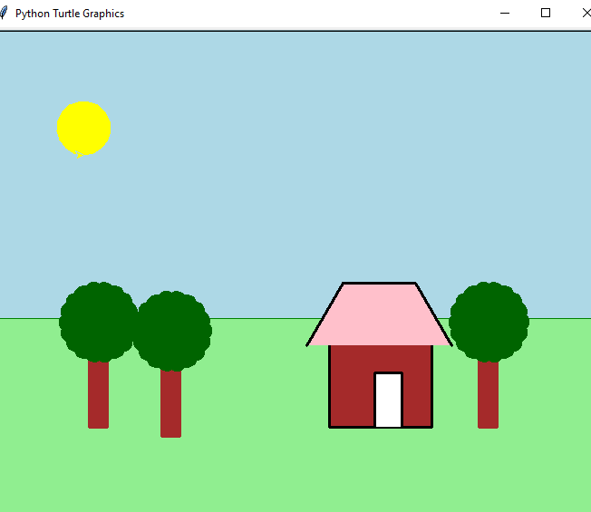
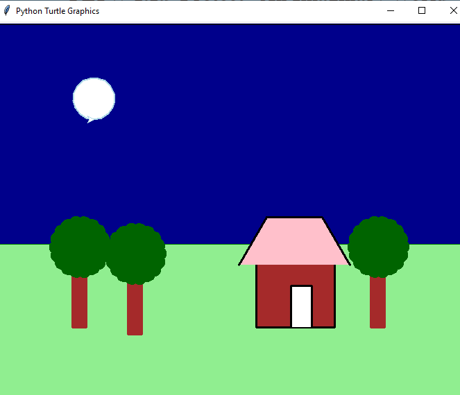

Home
Portfolio
About Me
Luna's Portfolio Page!
This is my first project called Dawn to Dusk
 
My group and I coded a python that represented the cycle of dawn to dusk or in other words day and night.
Our program had a scenery as shown above and the sun would move across the sky and once it reaches the edge,
the sky becomes night and the moon appears replacing the sun and it would move across the screen once again
and become a sun this cycle repeats in an infinite loop just to represent how a new day will always come.
In this project I was responsible for the creation of the codes for the background sky and house while also
managing the speed of the motion in which the sun and moon moves and also the placement of where the sun and
moon will appear each time the cycle repeats itself. When we faced problems during coding I was responsible for
going over the codes and finding the problem and notifying the group so that we could find the solution together.